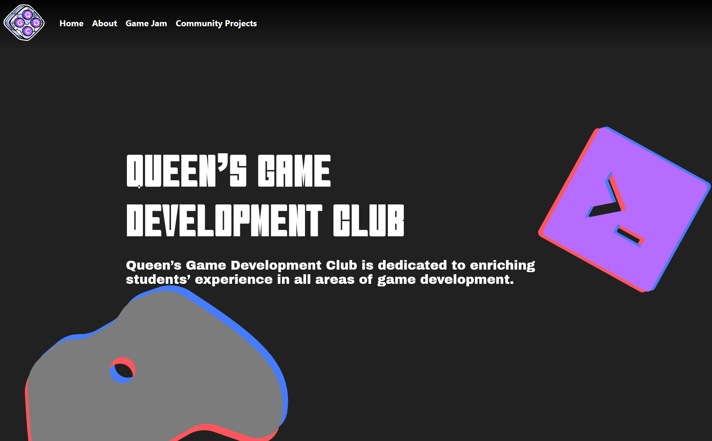

The goal
Give visitors a clear way to discover the club and its student games, while making project updates manageable for executives without requiring code changes.
Web development / Headless CMS / QA
A home for the club.
A showcase for its creators.
I helped build a React website for Queen’s Game Development Club, connected student projects to Sanity Studio, and tested the experience so executives could publish without editing code.

Explore the landing pageBuilt for a creative community
The public site brings the club’s story, events, team, and student work together through clear navigation and reusable layouts.
01 / The short version
Give visitors a clear way to discover the club and its student games, while making project updates manageable for executives without requiring code changes.
I helped implement React and Tailwind pages, connected Community Projects to a custom Sanity schema, and contributed component and end-to-end tests.
A content-driven project showcase with a dedicated editing interface. Published entries become consistent, responsive cards on the public site.
02 / Content architecture
An authorized executive creates or updates a project through the CMS.
Sanity Studio + Google OAuth
Store the title, description, creators, website, and project image.
Custom project schema
Request published project entries from the CMS at runtime.
React + JavaScript
Render entries as consistent cards with images and project links.
Reusable layouts + Tailwind
The custom project schema captures each entry’s title, description, creators, website, and image. Keeping these fields in Sanity separates editorial updates from the React source and gives the frontend a consistent content structure.
Google OAuth provides access to the Studio for authorized club executives. Editors maintain project information in the CMS, and the frontend fetches the published entries for the Community Projects page.
03 / Experience & quality
I helped implement public-facing layouts and interactive sections in React and Tailwind, matching the club’s bold visual direction across responsive pages.
Collapsible groups organize portraits, names, and roles by team. Visitors can explore the directory without scrolling through every profile at once.
I contributed Jest and Cypress tests covering components, navigation, CMS-driven content, and important user flows across the site.
The About page combines the club mission with a rotating wireframe logo, while expandable team sections organize the directory. These screenshots document the contributed site design.